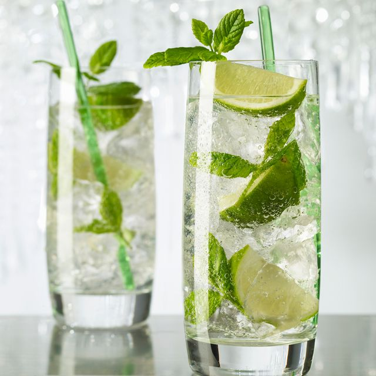

Mojito

Ingrediënten
- 1/2 limoen
- 10 blaadjes verse munt
- 2 tl rietsuiker
- Bacardi Superior (witte rum)
- sodawater
- 1 scoop gepileerd ijs
- 2 munttakjes
- collinsglas
Bereiding
- Snijd de halve limoenen in zes stukken en doe ze samen met de muntblaadjes in het collinsglas, bestrooi ze met rietsuiker en kras de suiker lichtjes in de blaadjes met behulp van een muddler
- Vul het glas op met gepileerd ijs en voeg daar rum aan toe.
- Roer alles goed om met sodawater.
- Decoreer met twee munttakjes, knijp even de blaadjes in om de geur te laten vrijkomen en serveer met een rietje.